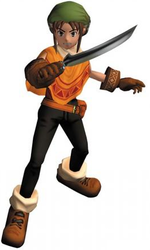
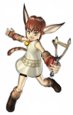
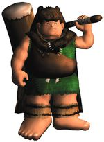
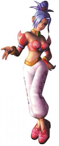
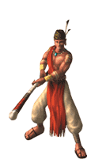
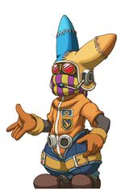

De: La Frikipedia, la enciclopedia extremadamente seria.
De: La Frikipedia, la enciclopedia extremadamente seria. De: La Frikipedia, la enciclopedia extremadamente seria.

|
FRIKIPEDIA QUIERE QUE ESTA DEFINICIÓN
PASE A SER UN ARTÍCULO FRIKIPÉDICO La información contenida en este artículo es una mínima parte de su jugo total, así que ponte los guantes, saca el tupperwere y empieza a exprimir el tema. Si lo haces serás recompensado con una galleta en almíbar y algo más. |
Dark cloud o nubesita negra en aspañol es un juego desarrollado por Mario y luigi por venganza a link que le gano en ventas con ocarina of time.
La historia comienza con un libro redactando la historia de un chico que perdio a su amada hace mas de 400 años.
Luego un lugar llamado el Santuario Oscuro, donde se está realizando un ritual satanico para despertar al Dark Genie,(al que llamaremos genio oscuro) una criatura legendaria de gran poder. El Coronel Fap, quien es el principal interesado en el despertar al genio para dominar el mundo casi como todos los villanos.
Luego de eso se esta celebrando el centenario del el pueblito noruge village mientras eso pasa toan esta en su casa en frikipedia porque es friki comiedo luego su madre le dice que se vaya a celebrar.
Mientras todos celebran(incluyendo a toan) es la luna se refleja una sombra muy rara con forma humanoide que es el genio niiga y el coronel fap después de eso el Nigga genie destruye la aldea quemandola y convierte a todo y todos en esferas mágicas pero toan muere aplastado por un molino de viento
Pero revive gracias al rey hada que le otorga un guante mágico con qje cuando encuentre las esferas puede reponer a las ciudades y gentes.
| Nombre | Descripción |
|---|---|
|  |
|
|  |
cual es más cómodo, pero como suele suceder, no es la adecuada para ciertos enemigos. |
|  |
|
|  |
|
|  |
|
|  |
|
Autor(es):